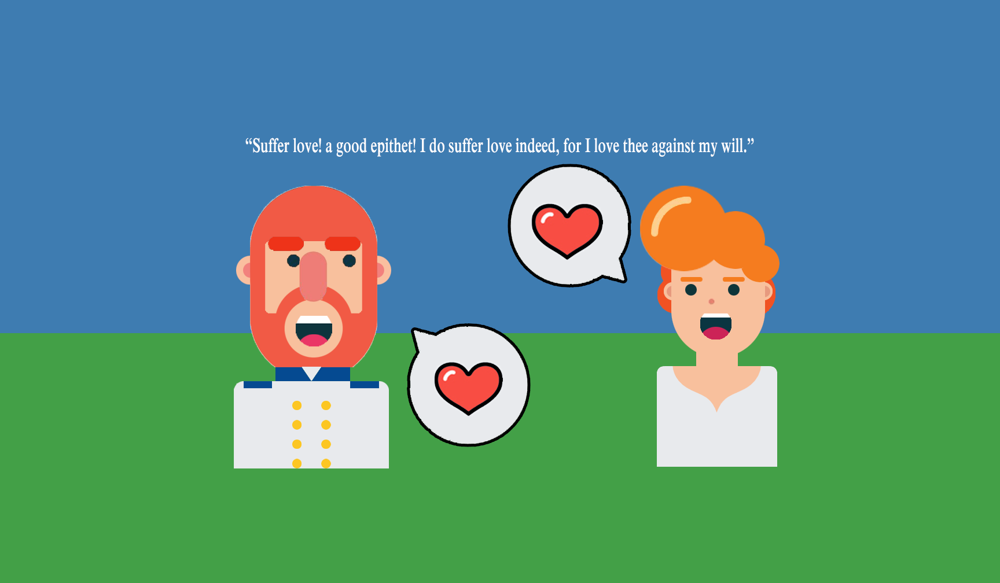
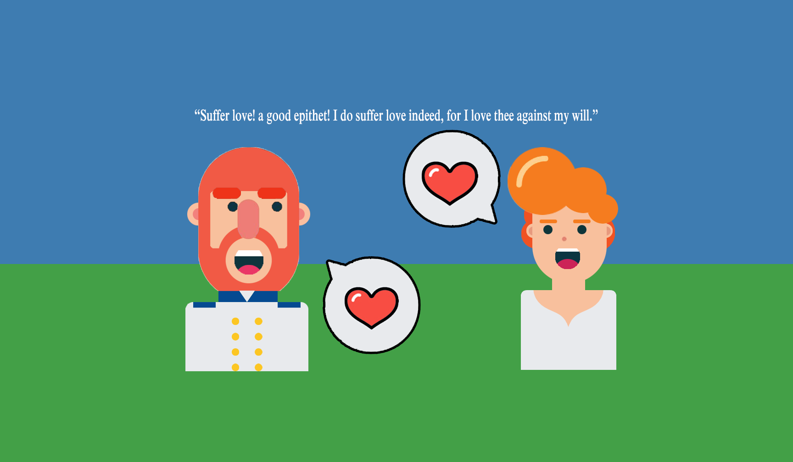

What We May Become
Change in Shakespeare
King Lear
The character of Lear itself is very finely conceived for the purpose. It is the only ground on which such a story could be built with the greatest truth and effect. It is his rash haste, his violent impetuosity, his blindness to every thing but the dictates of his passions or affections, that produces all his misfortunes, that aggravates his impatience of them, that enforces our pity for him...The greatness of Lear is not in corporal dimension, but in intellectual; the explosions of his passions are terrible as a volcano: they are storms turning up and disclosing to the bottom that rich sea, his mind, with all its vast riches. It is his mind which is laid bare. (Characters of Shakespeare's Plays, 1817)
 

Much Ado About Nothing
Why is Benedick, who takes Beatrice's seemingly more bitter taunts in good part, roused to such wrath at this? The blow to his mere vanity as a wit does not seem to explain sufficiently the effect on him, nor does the view that the sparring of the two here simply brings to a climax the rising anger of Benedick. Such an interpretation is not true to the spirit of the play or to the emphasis laid on the passage in the development of Shakespeare's plot. For it is immediately after this — after Benedick in recounting the quarrel to Don Pedro has declared that he would not marry Beatrice "though she were endowed with all that Adam had left him before he transgressed" — that Don Pedro proposes what is characterized as "one of Hercules' labours," to make the two antagonists fall in love with each other.